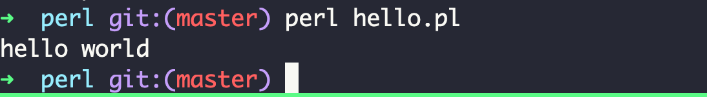

技术文档汇总
Table of Contents
1. 后端研发
1.1. Oracle
1.1.1. 📚 参考资料
- Oracle 关系数据库 参考链接
1.1.2. 开发环境配置
- CentOS 7 镜像启动
- docker container
启动 centos7 镜像
docker run _D -it --restart always \ -v ~/srv/pence/data:/data \ --hostname pence --name pence centos:7
重新进入进行容器
docker exec -it pence bash
删除容器
docker rm -f pence
- 配置主机开发环境
安装一波系统依赖库
yum update # common tools yum install -y net-tools vim tmux tree kernel-devel kernel-doc kernel-headers \ samba samba-client ntp rsync curl git # for oracle 11g install yum install -y binutils compat-libcap1 compat-libstdc++-33 gcc gcc-c++ glibc \ glibc-devel ksh libgcc libstdc++ libstdc++-devel libaio libaio-devel libXi \ libXtst make sysstat unixODBC unixODBC-devel oracleasm-support yum install -y gcc gcc-c++ cmake automake zip unzip python3 python3-devel \ python-devel python rpm-build redhat-rpm-config asciidoc hmaccalc \ perl-ExtUtils-Embed pesign xmlto audit-libs-devel binutils-devel \ elfutils-devel elfutils-libelf-devel ncurses-devel bison-devel newt-devel \ numactl-devel pciutils-devel python-devel zlib-devel readline-devel # for mysql yum install -y cmake ncurses ncurses-devel bison bison-devel openssl openssl-devel # for openGauss yum install -y libaio-devel flex bison bison-devel ncurses-devel glibc-devel \ patch redhat-lsb-core readline-devel
- 设置时区
cp /usr/share/zoneinfo/Asia/Shanghai /etc/localtime
- 安装数据库的前置准备
- 安装 Oracle 11g
- 配置系统内存以及 swap
1.2. MySQL
1.2.1. 📚 参考资料
- MySQL 开发文档 8.0.30 Source Code Documents
- MySQL 使用文档 InnoDB Storage Engine
- 专栏 MySQL 实战 45 讲
- 三方库 GORM | JPA | mybatis-3
1.2.2. 主从架构实验环境
- 配置 Docker 环境
- 安装 Docker Server
- 参考文档 Install the Compose standalone 安装 docker-compose
- 编写启动配置文件 MySQL 主备配置
- docker hub mysql 镜像
- 启动服务
docker-compose up -d
- 配置主备环境
- 查看主备网络配置
docker inspect mysql-master | jq '.[0].NetworkSettings.Networks.dbnet.IPAddress' docker inspect mysql-slave | jq '.[0].NetworkSettings.Networks.dbnet.IPAddress'
查看主机网络
docker network ls
- 主库配置备库用户的访问权限
create user "user02"@"%" identified by "user02"; grant replication slave on *.* to "user02"@"%"; flush privileges;
show master status
- 备库同步配置
# 这里的 host 等参数需要根据主库的配置修改 -- change master to master_host='172.20.0.100', master_user='user02', master_password='user02', master_log_file='1.000003', master_log_pos=823; -- change master to master_host='mysql-master', master_user='user02', master_password='user02', master_log_file='mysql-bin.000003', master_log_pos=0; change master to master_host='mysql-master', master_user='user02', master_password='user02', master_log_file='mysql-bin.000003', master_log_pos=841;
start slave;show slave status\G
如果出现这样的两行表示结果是正确的
SlaveIORunning: Yes SlaveSQLRunning: Yes
重置 slave
stop slave; reset slave;
- 主库建表
create table t ( id int primary key auto_increment, c int );
insert into t(c) values (1), (2), (3);
delete from t where id < 10;
- 备库查询
select * from t;
- 查看主备网络配置
- 设置登录别名
alias my1="MYSQL_PWD=p111 mysql -h127.0.0.1 -uroot -P9001" alias my2="MYSQL_PWD=p222 mysql -h127.0.0.1 -uroot -P9002" alias u01="MYSQL_PWD=user01 mysql -h127.0.0.1 -uuser01 -P9001 test01" alias u02="MYSQL_PWD=user02 mysql -h127.0.0.1 -uuser02 -P9002 test01" alias m100='docker exec -it mysql-master /bin/bash' alias m101='docker exec -it mysql-slave /bin/bash'
1.2.3. 运维主题
- 创建用户 & 授权访问数据库
create user 'jeffrey'@'%' identified by 'hello'; grant all privileges on employees.* to 'jeffrey'@'%'; flush privileges;
- 查看当前用户权限
select user, host from mysql.user;
- 修改用户密码
use mysql; set password for 'jeffrey'@'%' = password('root'); update user set password = password('new.password') where user = 'jeffrey' and host = '%'; update user set host = '%' where user = 'root'; flush privileges; alter user 'jeffrey'@'%' identitied by 'mypass';
1.2.4. 源码研究
- 安装编译调试环境
系统依赖安装
# 安装依赖包 yum update yum install -y net-tools vim tmux tree kernel-devel kernel-doc kernel-headers \ samba samba-client ntp rsync curl git wget yum install -y binutils compat-libcap1 compat-libstdc++-33 gcc gcc-c++ glibc \ glibc-devel ksh libgcc libstdc++ libstdc++-devel libaio libaio-devel libXi \ libXtst make sysstat unixODBC unixODBC-devel oracleasm-support zip unzip \ python-devel python rpm-build redhat-rpm-config asciidoc hmaccalc \ perl-ExtUtils-Embed pesign xmlto audit-libs-devel binutils-devel \ elfutils-devel elfutils-libelf-devel ncurses-devel bison-devel newt-devel \ python3 python3-devel \ numactl-devel pciutils-devel python-devel zlib-devel readline-devel
-
# gcc wget https://mirrors.tuna.tsinghua.edu.cn/gnu/gcc/gcc-12.1.0/gcc-12.1.0.tar.gz # 下载 gcc 的依赖 ./contrib/download_prerequisites # --enable-multilib 开启 32 位库支持 ./configure --prefix=/usr/local/gcc --disable-multilib make make install # gdb wget https://mirrors.tuna.tsinghua.edu.cn/gnu/gdb/gdb-12.1.tar.gz ./configure --prefix=/usr/local/gdb make make install
添加环境变量
export PATH=/usr/local/gcc/bin:$PATH export LD_LIBRARY_PATH=/usr/local/gcc/lib64:$LD_LIBRARY_PATH export PATH=/usr/local/gdb/bin:$PATH
cmake 安装 CMake Install
# 下载代码 curl -OL https://github.com/Kitware/CMake/releases/download/v3.25.2/cmake-3.25.2.tar.gz # 编译安装 ./bootstrap --prefix=/usr/local/cmake make make install
添加环境变量
export PATH=/usr/local/cmake/bin:$PATH
boost 下载并安装
wget -c https://boostorg.jfrog.io/artifactory/main/release/1.77.0/source/boost_1_77_0.tar.bz2 tar xjvf boost_1_77_0.tar.bz2
- 编译代码及初始数据库
- 参考资料 源代码安装文档 | TRACE 文件 | –gdb | The Optimizer Trace
配置文件
/etc/my.cnf# -* mode: Conf; -*- [mysqld] basedir=/opt/local/mysql datadir=/opt/local/mysql/data log-error=/tmp/mysql-error.log pid-file=/tmp/mysql.pid # debug=d,info,error,query,general,where:O,/tmp/mysqld.trace # debug=+d,info,error,query,general,enter,where:O,/tmp/mysqld.trace debug # autocommit=0 innodb_lock_wait_timeout=3600 # long_query_time = 0 slow_query_log = on slow_query_log_file = /tmp/mysql-slow.log # secure_file_priv = /tmp [client] user=root
编译源代码
# 准备代码编译目录, 输出目录为 out mkdir out cd out cmake -DCMAKE_INSTALL_PREFIX=/opt/local/mysql -DWITH_BOOST=../../boost/boost_1_77_0 -DWITH_DEBUG=1 -DWITH_UNIT_TESTS=0 .. # 编译代码 cd out make -j8 make install
初始化数据库
# 初始化数据库 mysqld --defaults-file=/etc/my.cnf --initialize-insecure # https://dev.mysql.com/doc/refman/8.0/en/starting-server.html # 启动数据库数据库, --gdb 是开启 gdb 调试支持 # --debug=d,info,error,query,general,where:O,/tmp/mysqld.trace mysqld --gdb >/dev/null 2>&1 & # 链接数据库 mysql # 关闭数据库 mysqladmin shutdown
- 代码阅读配置
# 生成跳转的 TAG ctags -e -R --languages=c,c++ .
1.3. Postgres
1.3.1. 前置环境变量
export PGDATA=/opt/local/pgsql/data
1.3.2. 编译调试 & 初始化数据
# 配置调试环境 ./configure --prefix=/opt/local/pgsql --enable-cassert --enable-debug CFLAGS="-ggdb -O0 -fno-omit-frame-pointer" # 编译, 安装 make -j8 make install
# 初始化数据库 initdb -D /opt/local/pgsql/data # 启动数据库 pg_ctl -D /opt/local/pgsql/data -l logfile start # 创建库 createdb test01 # 链接库 psql test01
1.3.3. 调试命令
找到对应的进程
$ ps aux | grep postgres jinghuihu 87208 0.0 0.0 34130524 676 s006 S+ 12:13PM 0:00.00 grep --color=auto --exclude-dir=.bzr --exclude-dir=CVS --exclude-dir=.git --exclude-dir=.hg --exclude-dir=.svn --exclude-dir=.idea --exclude-dir=.tox postgres jinghuihu 82329 0.0 0.2 34313316 36860 ?? Ss 10:51AM 0:00.16 postgres: jinghuihu test01 [local] idle jinghuihu 82278 0.0 0.0 34309036 1792 ?? Ss 10:51AM 0:00.00 postgres: logical replication launcher jinghuihu 82277 0.0 0.0 34310060 2136 ?? Ss 10:51AM 0:00.02 postgres: autovacuum launcher jinghuihu 82276 0.0 0.0 34307820 5152 ?? Ss 10:51AM 0:00.04 postgres: walwriter jinghuihu 82275 0.0 0.0 34307820 2212 ?? Ss 10:51AM 0:00.06 postgres: background writer jinghuihu 82274 0.0 0.0 34307820 2788 ?? Ss 10:51AM 0:00.01 postgres: checkpointer jinghuihu 80299 0.0 0.1 34309108 14920 ?? Ss 10:41AM 0:00.13 /opt/local/pgsql/bin/postgres -D /opt/local/pgsql/data
找到对应的进程，然后使用 lldb attach 上，打断点
(lldb) attach -p 82329
Process 82329 stopped
* thread #1, queue = 'com.apple.main-thread', stop reason = signal SIGSTOP
frame #0: 0x00007ff810e892fe libsystem_kernel.dylib`kevent + 10
libsystem_kernel.dylib`kevent:
-> 0x7ff810e892fe <+10>: jae 0x7ff810e89308 ; <+20>
0x7ff810e89300 <+12>: movq %rax, %rdi
0x7ff810e89303 <+15>: jmp 0x7ff810e84dc2 ; cerror_nocancel
0x7ff810e89308 <+20>: retq
Target 0: (postgres) stopped.
Executable module set to "/opt/local/pgsql/bin/postgres".
Architecture set to: x86_64h-apple-macosx-.
(lldb) b exec_simple_query
Breakpoint 1: where = postgres`exec_simple_query + 29 at postgres.c:994:21, address = 0x000000010f17af6d
(lldb) c
Process 82329 resuming
Process 82329 stopped
* thread #1, queue = 'com.apple.main-thread', stop reason = breakpoint 1.1
frame #0: 0x000000010f17af6d postgres`exec_simple_query + 29 at /Users/jinghuihu/code/jeanhwea/postgres/src/backend/tcop/postgres.c:994
991 static void
992 exec_simple_query(const char *query_string)
993 {
-> 994 CommandDest dest = whereToSendOutput;
^
995 MemoryContext oldcontext;
996 List *parsetree_list;
997 ListCell *parsetree_item;
Target 0: (postgres) stopped.
(lldb) bt
* thread #1, queue = 'com.apple.main-thread', stop reason = breakpoint 1.1
* frame #0: 0x000000010f17af6d postgres`exec_simple_query + 29 at /Users/jinghuihu/code/jeanhwea/postgres/src/backend/tcop/postgres.c:994
frame #1: 0x000000010f17a633 postgres`PostgresMain + 2243 at /Users/jinghuihu/code/jeanhwea/postgres/src/backend/tcop/postgres.c:4593
frame #2: 0x000000010f08d0d2 postgres`BackendRun + 50 at /Users/jinghuihu/code/jeanhwea/postgres/src/backend/postmaster/postmaster.c:4511
frame #3: 0x000000010f08c6bc postgres`BackendStartup + 524 at /Users/jinghuihu/code/jeanhwea/postgres/src/backend/postmaster/postmaster.c:4239
frame #4: 0x000000010f08b4ec postgres`ServerLoop + 716 at /Users/jinghuihu/code/jeanhwea/postgres/src/backend/postmaster/postmaster.c:1806
frame #5: 0x000000010f088dc7 postgres`PostmasterMain + 6471 at /Users/jinghuihu/code/jeanhwea/postgres/src/backend/postmaster/postmaster.c:1478
frame #6: 0x000000010ef6eda0 postgres`main + 816 at /Users/jinghuihu/code/jeanhwea/postgres/src/backend/main/main.c:202
frame #7: 0x00007ff810b92310 dyld`start + 2432
(lldb) c
Process 82329 resuming
(lldb) detach
Process 82329 detached
(lldb)
1.4. ClickHouse
1.4.1. 安装步骤
- 官方文档 doc
# https://clickhouse.com/docs/en/development/build-osx cmake -G Ninja -DCMAKE_BUILD_TYPE=RelWithDebInfo -S . -B build
1.5. Java
1.5.1. Spring Framework
1.5.2. Kafka
- 资源链接
- 说明文档 link
- 环境配置
- 官网快速使用手册
# 启动 zk ./bin/zookeeper-server-start.sh config/zookeeper.properties # 启动 kafka ./bin/kafka-server-start.sh config/server.properties # 创建 topic ./bin/kafka-topics.sh --bootstrap-server localhost:9092 --create --topic quickstart-events # 显示 topic 列表 ./bin/kafka-topics.sh --bootstrap-server localhost:9092 --list # 查看指定 topic 状态 ./bin/kafka-topics.sh --bootstrap-server localhost:9092 --describe --topic quickstart-events # 生产者 & 消费者 ./bin/kafka-console-consumer.sh --bootstrap-server localhost:9092 --from-beginning --topic quickstart-events ./bin/kafka-console-producer.sh --bootstrap-server localhost:9092 --topic quickstart-events
配置相关
./bin/kafka-configs.sh --zookeeper localhost:2181 --all
- docker 版本配置
- docker hub
配置文件 docker-compose.yaml
docker-compose up -d
- 源代码
跳过测试编译
./gradlew build -x test
编译发布包
# 编译包 ./gradlew clean releaseTarGz # 编译产物 ls ./core/build/distributions/
- 官网快速使用手册
1.5.4. JVM
1.5.5. Hive
配置 hadoop
export HADOOP_HOME=/opt/local/hack/hadoop-2.6.0 export PATH="$HADOOP_HOME/bin:$HADOOP_HOME/sbin:$PATH" export HIVE_HOME=/opt/local/hack/apache-hive-1.2.2-bin export PATH="$HIVE_HOME/bin:$PATH"
配置 core-site.xml
<configuration> <property> <name>fs.defaultFS</name> <value>hdfs://localhost:9000</value> </property> </configuration>
配置 hdfs-site.xml
<configuration> <property> <name>dfs.replication</name> <value>1</value> </property> <property> <name>dfs.namenode.name.dir</name> <value>/opt/local/hdfs/namenode</value> </property> <property> <name>dfs.datanode.data.dir</name> <value>/opt/local/hdfs/datanode</value> </property> </configuration>
初始化命令
# 格式化 namenode hdfs namenode -format # 启动/关闭 dfs start-dfs.sh stop-dfs.sh
hive 需要有 /tmp, /user/hive/warehouse 目录, 并且配置 g+w 权限
- 配置元数据存放目录 hive.metastore.warehouse.dir
hadoop fs -mkdir /tmp hadoop fs -mkdir -p /user/hive/warehouse hadoop fs -chmod g+w /tmp hadoop fs -chmod g+w /user/hive/warehouse
解决 [ERROR] Terminal initialization failed; falling back to unsupported 问题
export HADOOP_USER_CLASSPATH_FIRST=true
1.5.6. SDK Man
- 官网 link
# 安装 SDK Man curl -s "https://get.sdkman.io" | bash # 安装 JDK sdk list java sdk install java 11.0.19-tem sdk install java 8.0.302-open sdk install java 17.0.7-tem # 离线安装, 创建 SDK 包为 8.0.191-online sdk install java 8.0.191-online /opt/admin/java export JAVA_HOME=/opt/admin/java # 修改默认 SDK 版本 sdk list java | grep installed sdk default java 11.0.19-zulu # 环境 # 初始化环境, 生成 .sdkmanrc sdk env init # 安装环境 sdk env install # 切换环境 sdk env # 清除环境 sdk env clear # 安装其他 SDK 工具 sdk install gradle sdk install java sdk install hadoop sdk install ant # 强制更新 SDK Man sdk selfupdate force
2. 系统运维
2.1. Docker
2.1.1. Engine 配置
安装文档 link
vim /etc/docker/daemon.json systemctl restart docker
daemon.json 配置
{ "insecure-registries": [ "gitana.jeanhwea.io:5000" ] }
2.1.2. 国内镜像
daemon.json 配置
{ "registry-mirrors": [ "https://registry.docker-cn.com", "https://docker.mirrors.ustc.edu.cn", "http://hub-mirror.c.163.com" ] }
2.2. Kubernetes
2.2.1. minikube
2.2.2. kubeadm
系统安装
# 创建 master 集群 kubeadm init --apiserver-advertise-address=192.168.0.210 \ --pod-network-cidr=10.244.0.0/16 \ --kubernetes-version 1.27.2 \ --image-repository registry.aliyuncs.com/google_containers # 遇到错误重置 kubeadm reset
查看使用到的镜像
kubeadm config images list kubeadm config images pull --image-repository registry.cn-hangzhou.aliyuncs.com/google_containers kubeadm config images pull --image-repository registry.aliyuncs.com/google_containers
新增 node 节点
kubeadm token create --print-join-command
2.2.3. kubectl
- 快速开始
快速启动一个测试服务
# 创建部署 kubectl create deployment sayhello --image=jeanhwea/sayhello:v1.0.0 kubectl create deployment sayhello --image=jeanhwea/sayhello:v1.0.0 -r 4 # 通过 NodePort 暴露服务 kubectl expose deployment sayhello --port=80 --type=NodePort # 动态扩容 kubectl scale deployment sayhello --replicas=4
获取启动的 Service
kubectl get svc
# 登录到 minikube shell minikube ssh # 在 NameNode 中获取页面 curl http://0.0.0.0:31151
# Service 对象的域名完全形式是 "对象.名字空间.svc.cluster.local" wget -qO- sayhello.default.svc.cluster.local
- 配置 DashBoard
wget https://raw.githubusercontent.com/kubernetes/dashboard/v2.7.0/aio/deploy/recommended.yaml # 安装 dashboard kubectl apply -f recommended.yaml # 卸载 dashboard kubectl delete -f recommended.yaml kubectl get pods,svc -n kubernetes-dashboard
- 查看 Pod
kubectl get pods -A # 登录到 pod 上排查问题 kubectl exec -it sayhello-847d5df547-4bk9z -- /bin/bash
- 创建 Job
获取一个基础的 yaml
kubectl create job echo-job --image=busybox --dry-run=client -o yaml
修改得到配置
apiVersion: batch/v1 kind: Job metadata: name: echo-job spec: template: spec: restartPolicy: OnFailure containers: - image: busybox name: echo-job imagePullPolicy: IfNotPresent command: ["/bin/echo"] args: ["hello", "world"]
- 配置 ConfigMap
kubectl get cm kubectl describe cm config01
2.2.4. 管理工具
k8s 包管理器: helm link
helm repo add bitnami https://charts.bitnami.com/bitnami helm repo update helm install bitnami/mysql --generate-name helm show all bitnami/mysql helm list helm uninstall mysql-1686374196
2.3. 磁盘管理
2.3.2. Ubuntu 磁盘分区扩容
使用 parted, resize2fs 命令行工具进行操作
root@ubuntu201:/home/ubuntu# parted GNU Parted 3.4 Using /dev/sda Welcome to GNU Parted! Type 'help' to view a list of commands. (parted) print # ==> 查看当前磁盘分区信息 Model: VMware Virtual disk (scsi) Disk /dev/sda: 215GB Sector size (logical/physical): 512B/512B Partition Table: gpt Disk Flags: Number Start End Size File system Name Flags 1 1049kB 2097kB 1049kB bios_grub 2 2097kB 53.7GB 53.7GB ext4 (parted) resizepart # ==> 扩容分区 2 Partition number? 2 Warning: Partition /dev/sda2 is being used. Are you sure you want to continue? Yes/No? Yes End? [53.7GB]? 215GB # ==> 这里扩容到最大可见分区 (parted) print # ==> 扩容后的分区 2 变成 215G Model: VMware Virtual disk (scsi) Disk /dev/sda: 215GB Sector size (logical/physical): 512B/512B Partition Table: gpt Disk Flags: Number Start End Size File system Name Flags 1 1049kB 2097kB 1049kB bios_grub 2 2097kB 215GB 215GB ext4 (parted) Information: You may need to update /etc/fstab. root@ubuntu201:/home/ubuntu# df -h # ==> 文件系统并未扩容 Filesystem Size Used Avail Use% Mounted on tmpfs 1.6G 1.2M 1.6G 1% /run /dev/sda2 49G 44G 3.1G 94% / tmpfs 7.8G 0 7.8G 0% /dev/shm tmpfs 5.0M 0 5.0M 0% /run/lock tmpfs 1.6G 4.0K 1.6G 1% /run/user/1000 root@ubuntu201:/home/ubuntu# resize2fs /dev/sda2 # ==> 调整文件系统大小 resize2fs 1.46.5 (30-Dec-2021) Filesystem at /dev/sda2 is mounted on /; on-line resizing required old_desc_blocks = 7, new_desc_blocks = 25 The filesystem on /dev/sda2 is now 52428283 (4k) blocks long. root@ubuntu201:/home/ubuntu# df -h Filesystem Size Used Avail Use% Mounted on tmpfs 1.6G 1.2M 1.6G 1% /run /dev/sda2 197G 44G 145G 24% / tmpfs 7.8G 0 7.8G 0% /dev/shm tmpfs 5.0M 0 5.0M 0% /run/lock tmpfs 1.6G 4.0K 1.6G 1% /run/user/1000 root@ubuntu201:/home/ubuntu# reboot
3. 研发效率
3.1. GDB & LLDB
3.1.1. 参考资料及链接
3.1.2. 进程启动: run & attach
方法一：使用 attach 模式调试。首先正常启动重新，然后使用 attach 命令附属到进程上
(lldb) attach -p 18616 (gdb) attach 18616
方法二：直接 run 启动进程
# 指定启动文件 (lldb/gdb) file <binary> # 直接 run 启动进程 (lldb/gdb) r # 添加启动参数 (lldb/gdb) r args1 args2 ... # 查看参数 (gdb) show args (lldb) settings show target.run-args

3.1.3. 调试流程控制
- 设置断点 breakpoint
# 普通断点 b main b main.cc:12 b 12 # 条件断点 (gdb) b 34 if i = 10 (gdb) break foo if strcmp(y,"hello") == 0 (lldb) breakpoint set --name foo --condition '(int)strcmp(y,"hello") == 0' (lldb) br s -n foo -c '(int)strcmp(y,"hello") == 0' (lldb) br s -n read_page -c 'm_page_id.space()==56' # 临时断点: 临时断点执行一次后自动销毁 tb main
- 流程控制 step & next & continue
- step 单步调试，不进入函数
- next 单步调试，进入函数
continue 继续执行
s # step n # next c # continue # until 直接执行到行数 (gdb) until 12 (lldb) thread until 12
- 跳转到指定行
- 条件断点
tbtemp breakpoint - until
until <line>
- 条件断点
返回当前值
(gdb) return <return expression> (lldb) thread return <return expression>
3.1.4. 保持断点 & 现场恢复
GDB 保存断点的方式比较方便，直接保持成一个文本文件后，再应用代码
# 保持断点到文件中 (gdb) save breakpoint mybreak.txt # 重新加载保存的断点 (gdb) source mybreak.txt
LLDB 保存断点也有类似的命令，但是保存结果是一个 JSON
# 保存断点到 json 格式文件 (lldb) breakpoint write -f dbg001 # 读取断点到 json 格式文件 (lldb) breakpoint read -f dbg001
也可以参考这个答案优化流程 SO

3.1.5. 查看/修改变量和内存数据
打印变量 print
(lldb) p thd->m_thread_id (my_thread_id) $1 = 10 (lldb) x/w &$1 0x7fbdc1240188: 0x0000000a (lldb)
查看内存地址中的数据
(lldb) x/8w $0 => 打印地址的数据, 打印 8 条数据, [w, b] 表示不同的打印方式 0x7fbdc123dc00: 0x0916f4d8 0x00000001 0x0916f548 0x00000001 0x7fbdc123dc10: 0x00000000 0x00000000 0xc1240440 0x00007fbd (lldb) x/8b $0 0x7fbdc123dc00: 0xd8 0xf4 0x16 0x09 0x01 0x00 0x00 0x00 (lldb) x/8x $0 0x7fbdc123dc00: 0xd8 0xf4 0x16 0x09 0x01 0x00 0x00 0x00
查看 frame 中变量
# 查看局部变量 (lldb) frame variable (lldb) fr v # 查看全局变量 (lldb) target variable (lldb) ta v # 查看调用栈 thread backtrace (lldb/gdb) bt
3.1.6. MacOS: 证书错误问题 (^-^)
please check gdb is codesigned - see taskgated(8)
手工编写 gdb.xml
<?xml version="1.0" encoding="UTF-8"?> <!DOCTYPE plist PUBLIC "-//Apple//DTD PLIST 1.0//EN" "http://www.apple.com/DTDs/PropertyList-1.0.dtd"> <plist version="1.0"> <dict> <key>com.apple.security.cs.allow-jit</key> <true/> <key>com.apple.security.cs.allow-unsigned-executable-memory</key> <true/> <key>com.apple.security.cs.allow-dyld-environment-variables</key> <true/> <key>com.apple.security.cs.disable-library-validation</key> <true/> <key>com.apple.security.cs.disable-executable-page-protection</key> <true/> <key>com.apple.security.cs.debugger</key> <true/> <key>com.apple.security.get-task-allow</key> <true/> </dict> </plist>
使用命令给 gdb 添加证书
codesign --entitlements gdb.xml -fs gdb-cert /usr/local/bin/gdb
3.1.7. 交叉编译
export PREFIX="/opt/i386-elf-toolchain" export TARGET=i386-elf export PATH="$PREFIX/bin:$PATH" wget -c https://mirrors.tuna.tsinghua.edu.cn/gnu/gcc/gcc-11.4.0/gcc-11.4.0.tar.gz wget -c https://mirrors.tuna.tsinghua.edu.cn/gnu/binutils/binutils-2.40.tar.gz wget -c https://mirrors.tuna.tsinghua.edu.cn/gnu/gdb/gdb-11.2.tar.gz tar xzvf binutils-2.40.tar.gz tar xzvf gcc-11.4.0.tar.gz cd gcc-11.4.0 ./contrib/download_prerequisites DIR=$PWD # rm -rf $DIR/build-binutils mkdir -p $DIR/build-binutils cd $DIR/build-binutils ../binutils-2.40/configure --target=$TARGET --prefix=$PREFIX --enable-interwork --enable-multilib --disable-nls --disable-werror 2>&1 | tee configure.log make all -j4 2>&1 | tee make.log sudo make install 2>&1 | tee install.log # rm -rf $DIR/build-gcc mkdir -p $DIR/build-gcc cd $DIR/build-gcc ../gcc-11.4.0/configure --target=$TARGET --prefix=$PREFIX --disable-nls --disable-libssp --enable-languages=c --without-headers 2>&1 | tee configure.log make all-gcc -j4 2>&1 | tee make-all-gcc.log make all-target-libgcc -j4 2>&1 | tee make-all-target-libgcc.log sudo make install-gcc 2>&1 | tee make-install-gcc.log sudo make install-target-libgcc 2>&1 | tee make-install-target-libgcc.log # rm -rf $DIR/build-gdb mkdir -p $DIR/build-gdb cd $DIR/build-gdb ../gdb-11.2/configure --target=$TARGET --prefix=$PREFIX --program-prefix=i386-elf- make -j4 2>&1 | tee make.log sudo make install 2>&1 | tee install.log
3.2. SSH 配置
3.2.1. forward 端口转发
本地转发
# -N 不执行命令, -L local 转发 <remote-port>:<local-host>:<local-port> ssh -N -L 9092:127.0.0.1:9092 user@host
远端转发
# -N 不执行命令, -R remote 转发 <local-port>:<remote-host>:<remote-port> ssh -N -R 9092:127.0.0.1:9092 user@host
3.3. Git
3.3.1. 配置用户信息
git config --global user.email "hujinghui@buaa.edu.cn" git config --global user.name "Jinghui Hu"
3.4. Docker 环境
安装参考链接 link
yum install -y yum-utils yum-config-manager --add-repo https://download.docker.com/linux/centos/docker-ce.repo yum install docker-ce docker-ce-cli containerd.io docker-buildx-plugin docker-compose-plugin
3.5. CentOS 工具链
3.5.1. SCL (Software Collection)
SCL 提供一下较新的工具集 link
yum install centos-release-scl yum makecache yum repolist
3.5.2. Red Hat Developer Toolset
使用手册 User Guide
yum install scl-utils centos-release-scl yum list all --enablerepo='centos-sclo-rh' | grep "devtoolset" yum install devtoolset-11-toolchain
配置并启用 scl 工具集
scl --list scl enable devtoolset-11 bash
3.6. WSL
3.6.1. Ubuntu 安装并迁移到其他盘
- 安装说明 link
移动数据文件到非系统盘
# 查看当前的 wsl 容器 wsl -l -v wsl --export Ubuntu ubuntu2204.tar wsl --unregister Ubuntu mkdir data wsl --import Ubuntu-22.04 data ubuntu2204.tar
3.6.2. Docker 无法启动
/usr/sbin/iptables-nft 网络管理 WSL2 不支持，需要修改一下
$ sudo update-alternatives --config iptables
There are 2 choices for the alternative iptables (providing /usr/sbin/iptables).
Selection Path Priority Status
------------------------------------------------------------
* 0 /usr/sbin/iptables-nft 20 auto mode
1 /usr/sbin/iptables-legacy 10 manual mode
2 /usr/sbin/iptables-nft 20 manual mode
Press <enter> to keep the current choice[*], or type selection number: 1
update-alternatives: using /usr/sbin/iptables-legacy to provide /usr/sbin/iptables (iptables) in manual mode
$ sudo service docker start
* Starting Docker: docker [ OK ]
$ docker ps
CONTAINER ID IMAGE COMMAND CREATED STATUS PORTS NAMES
3.6.3. 缺失字体
默认添加 Windows 自带的字体来显示缺失字体
sudo ln -s /mnt/c/Windows/Fonts /usr/share/fonts/host fc-cache -fv
3.6.4. 解决提示符错误
Windows Terminal 在安装 zsh-autosuggestions 时会显示的有问题，这里修改一下 PS1
ZSH_THEME="none" export PS1='WSL(%3~)%# '
4. 效率工具
4.1. Perl
4.1.1. 环境配置
4.1.2. 基本使用
- Hello world
创建
hello.pl文件写以下代码print("hello world\n");使用 perl 命令运行代码
perl hello.pl

- 过滤 MySQL trace 日志
use strict; use warnings; my $cid = 8; my $fout = "/tmp/mysqld-thd-$cid.txt"; open(FIN, '<:encoding(UTF-8)', "/tmp/mysqld.trace") or die; open(FOUT, '>', $fout) or die; while (my $line = <FIN>) { if ($line =~ /^T\@$cid/) { print FOUT $line; } } close(FOUT); $fout;
4.2. Python
4.3. Ruby
- 配置国内 GEM 镜像 Ruby China
5. 问题排查
5.1. 科学上网
5.1.1. githubusercontent 链接失败
/etc/hosts
185.199.108.133 raw.githubusercontent.com
5.2. 使用体验
5.2.1. Esc 键有延迟
问题说明 Eliminating delays on ESC in vim and zsh 尝试按照以下思路解决这个问题 vim
set timeoutlen=1000 ttimeoutlen=0
zsh
# 10ms for key sequences KEYTIMEOUT=1
tmux
# .tmux.conf set -s escape-time 0 echo 'set -s escape-time 0' >> ~/.tmux.conf
5.3. CentOS
5.3.1. 硬件时钟 hwclock
# Display hwclock hwclock --show # Sync hwclock to system hwclock --hctosys # Save clock, for reboot clock -w hwclock -w
5.4. MySQL
5.4.1. Public Key Retrieval is not allowed
在设置数据库添加如下的链接选项
employees?allowPublicKeyRetrieval=true
5.5. Docker
5.5.1. 文件夹递归复制
# 正确地递归复制文件夹方案 COPY src/ target/ # 以下两种不和递归复制 COPY src/* target COPY src target
6. 基础知识
6.1. 数据结构
- 红黑树 rbtree
6.2. 操作系统
6.2.2. Minix
- 配置环境
下载代码
mkdir minix cd minix git clone git://git.minix3.org/minix src cd src
安装依赖
sudo apt-get install build-essential curl git zlibc zlib1g zlib1g-dev g++编译内存镜像
JOBS=8 ./releasetools/x86_hdimage.sh启动镜像
cd ../obj.i386/destdir.i386/boot/minix/.temp qemu-system-i386 -display none \ -serial stdio \ -kernel kernel \ -append "console=tty00 rootdevname=c0d0p1" \ -initrd "mod01_ds,mod02_rs,mod03_pm,mod04_sched,mod05_vfs,mod06_memory,mod07_tty,mod08_mfs,mod09_vm,mod10_pfs,mod11_init" \ -hda /opt/local/hack/minix/src/minix_x86.img --enable-kvm

6.2.3. Linux
- 编译内核
一些依赖安装
sudo apt install ncurses-dev flex bison libelf-dev libssl-dev dwarves
- 定制内核 CentOS Wiki
# 下载源码 wget -c https://mirrors.tuna.tsinghua.edu.cn/kernel/v5.x/linux-5.15.115.tar.gz tar xvzf linux-5.15.115.tar.gz cd linux-5.15.115 # 准备配置文件 cp /boot/config-`uname -r` .config # 开启或关闭配置选项 make menuconfig # 确保 CONFIG_SYSTEM_TRUSTED_KEYS 为空 # cat .config | grep CONFIG_SYSTEM_TRUSTED_KEYS # CONFIG_SYSTEM_TRUSTED_KEYS="" # 编译内核 make -j12 # 安装模块 sudo make modules_install # 安装内核 sudo make install # 重启系统, 查看内核是否运行正常 reboot uname -r
修改 grub 代码
# 查看默认的 grub 选项 grub2-editenv list # 更改默认启动选项 grub2-set-default '5.16.0-1.el7.elrepo.x86_64) 7 (Core)'
- Linux 资料网站
- Ubuntu 22.04 编译 linux 0.11
apt install bin86
6.3. 极客时光
6.3.1. 专栏 22 讲通关 Go 语言
6.3.2. 专栏 24 讲吃透分布式数据库
6.3.3. 专栏 消息队列高手课
- 分布式事务
- 订单系统在消息队列上开启一个事务
- 然后订单系统给消息服务器发送一个 半消息
- 这个半消息不是说消息内容不完整，它包含的内容就是完整的消息内容，半消息和普通 消息的唯一区别是，在事务提交之前，对于消费者来说，这个消息是不可见的
- 半消息发送成功后，订单系统就可以执行本地事务

如果 半消息 提交失败，不同队列会有不同处理方式
- Kafka 的解决方案比较简单粗暴，直接抛出异常，让用户自行处理。我们可以在业务代 码中反复重试提交，直到提交成功，或者删除之前创建的订单进行补偿
RocketMQ 中的事务实现中，增加了事务反查的机制来解决事务消息提交失败的问题

为了支撑这个事务反查机制，我们的业务代码需要实现一个反查本地事务状态的接口， 告知 RocketMQ 本地事务是成功还是失败
- 重复消费
在 MQTT 协议中，给出了三种传递消息时能够提供的服务质量标准，这三种服务质量从低到 高依次是：
- At most once: 至多一次。消息在传递时，最多会被送达一次。换一个说法就是，没什 么消息可靠性保证，允许丢消息。一般都是一些对消息可靠性要求不太高的监控场景使 用，比如每分钟上报一次机房温度数据，可以接受数据少量丢失。
- At least once: 至少一次。消息在传递时，至少会被送达一次。也就是说，不允许丢消 息，但是允许有少量重复消息出现。
- Exactly once：恰好一次。消息在传递时，只会被送达一次，不允许丢失也不允许重复， 这个是最高的等级。
用幂等性解决重复消息问题
- 利用数据库的唯一约束实现幂等
- 为更新的数据设置前置条件
- 记录并检查操作
- 消息积压
- 优化消息收发性能，预防消息积压的方法有两种，
- 增加批量或者是增加并发，在发送端这两种方法都可以使用
- 在消费端需要注意的是，增加并发需要同步扩容分区数量，否则是起不到效果的
- 对于系统发生消息积压的情况，需要先解决积压，再分析原因
- 快速解决积压的方法就是通过水平扩容增加 Consumer 的实例数量
- 优化消息收发性能，预防消息积压的方法有两种，
7. 学习计划
7.2. 操作系统实验
AUR 编译说明文档 link
# clone build repository git clone https://aur.archlinux.org/i386-elf-binutils.git # make binary package makepkg -s # install package sudo pacman -U i386-elf-binutils-2.40-1-x86_64.pkg.tar.zst
c 语言交叉编译
# 交叉编译, -ffreestanding 不需要标准库支持，生成目标是一个独立环境 i386-elf-gcc -ffreestanding -c function.c -o function.o # 反汇编 i386-elf-objdump -d function.o # 链接, -Ttext 0x0 表示代码段的起始地址 i386-elf-ld -o function.bin -Ttext 0x0 --oformat binary function.o # 反汇编测试生成的二进制文件 ndisasm -b 32 function.bin